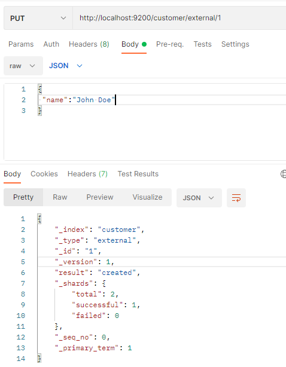
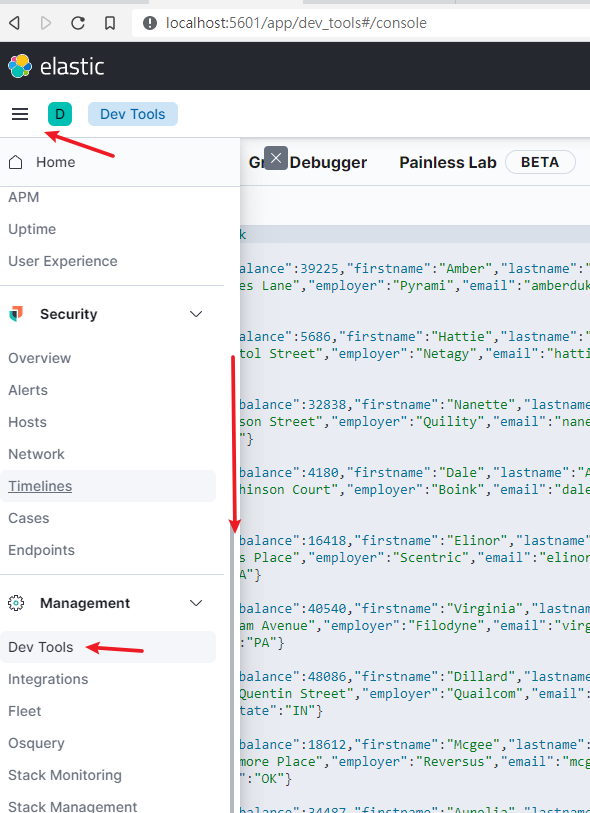
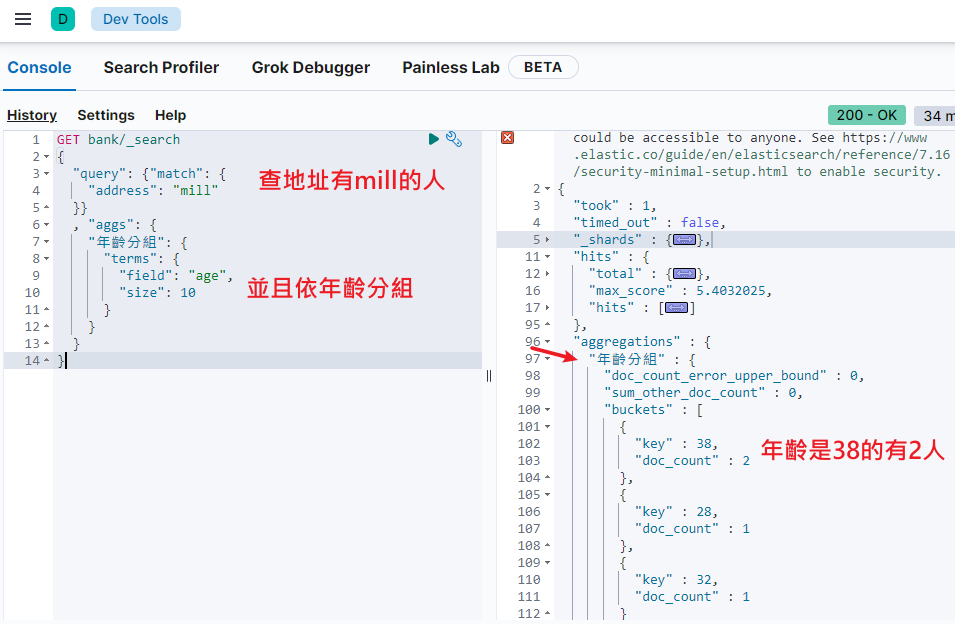
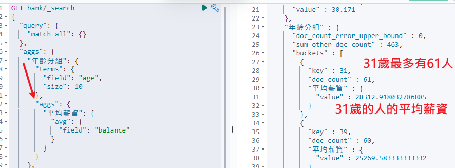
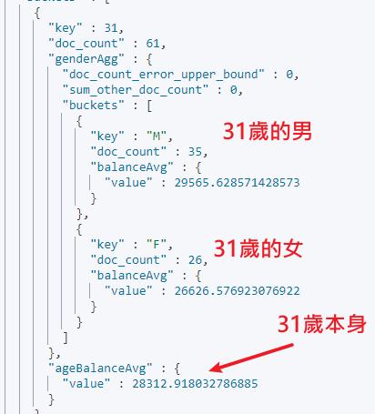
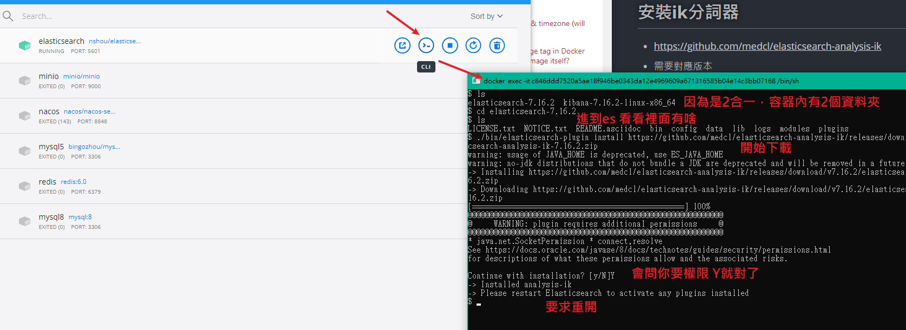
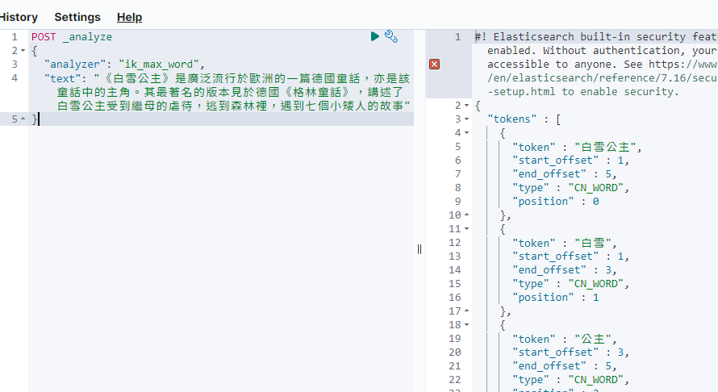

ElasticSearch
用來執行站內搜索(如商品查詢)的引擎
- 開源的分散式搜尋引擎，基於Apache Lucene，但是封裝成REST API，方便操作
- 核心觀念: Inverted Index (反向索引)
- 是 NoSQL 資料庫的一種，所有的資料都是以 JSON 的方式進行存取
- 名詞對應:
| RDBMS | 概念 | Elasticsearch |
|---|---|---|
| Table | 表 | Index |
| Row | 一筆資料(例如:張三) | Document |
| Column | 屬性(例如:姓名) | Field |
| Schema | 架構(例如:資料類型、允許為空等等) | Mapping |
| SQL | 操作語句 | DSL |
- 以前可能有人會說Index對應database，type才是對應表，但在ES7版後Type已經幾乎被棄用
- 個人直接把它看作表了，畢竟是概念，不用分太細
安裝
使用docker
- 教學的他設定掛載位置與插件路徑，並取得權限等等，方便後續操作
mkdir -p /mydata/elasticsearch/config
mkdir -p /mydata/elasticsearch/data
echo "http.host: 0.0.0.0" >/mydata/elasticsearch/config/elasticsearch.yml
chmod -R 777 /mydata/elasticsearch/
- 二合一鏡像: https://hub.docker.com/r/nshou/elasticsearch-kibana
- 目前2022年1月是7.16.2板
- 我直接用docker desktop，就沒掛載那麼多
docker pull nshou/elasticsearch-kibana
docker run --name elasticsearch -p 5601:5601 -p 9200:9200 -e "discovery.type=single-node" -e ES_JAVA_OPTS="-Xms64m -Xmx512m" -d nshou/elasticsearch-kibana
--name取名-e "discovery.type=single-node"單節點模式-e ES_JAVA_OPTS="-Xms64m -Xmx512m"限制記憶體，不限會占用超多-p連接阜- Elasticsearch @ localhost:9200
- Kibana @ localhost:5601
-d後台運行並返回id
測試
- 嘗試看看Kibana介面，訪問: localhost:5601
- 查看主服務健康: http://localhost:9200/_cat/health
使用
- 查看索引: http://localhost:9200/_cat/indices
- 相當於show databases或tables
建立一個Document
- 使用PUT請求 http://localhost:9200/customer/external/1
- 並且帶有body資訊

-
返回的是metadata，後設資料，這些
_開頭的就是資料的資料_index：document 所屬的 index 名稱，相當於"表"_type：document 類型 ，通常為_doc_id：document ID，主鍵_source：document 的原始 JSON 資料樣貌_version：版本訊息 (有這欄位就表示 ES 具有版本控管的能力)_score：查詢時的算分結果 (每次的搜尋都會根據 document 對於搜尋內容的相關度進行算分)
-
index在 ES 中是個邏輯空間的概念，用來儲存 document 的容器，而這些 document 內容都是相似的 (跟其他領域的 index 用法不太一樣) -
shard在 ES 中則是個物理空間的的概念，index 中的資料會分散放在不同的 shard 中
PUT與POST更新
- PUT必須指定ID，如果存在則更新(覆蓋更新)
- 與REST規則相符，PUT是冪等，即多次操作結果返回相同(每次都會整個刷新的意思)
- POST不必指定ID，如果不存在就建立，已存在就更新
- 但是如果資料都沒變動，就不更新，且會返回"noop"
查詢
-
使用GET請求 http://localhost:9200/customer/external/1
- 並且不能有body
-
返回
"_version": 1,
"_seq_no": 0,
"_primary_term": 1,
_seq_no 每次更新都會+1，用來做樂觀鎖
_primary_term 當主分片重新分配，如重啟就會變化
刪
- 就DELETE，可以指定ID，或整個index全刪
- 沒辦法刪除type
bulk批次操作
- 每條語法獨立，其中有誰失敗不影響其他人
- 範例:
POST customer/external/_bulk
{"index":{"_id":"1"}}
{"name":"John Doe"}
{"index":{"_id":"2"}}
{"name":"John Doe"}
kibana
舒服的可視化操作介面
-
連線到: localhost:5601
-
導入測試數據:
-
https://github.com/elastic/elasticsearch/blob/v7.4.2/docs/src/test/resources/accounts.json
POST bank/account/_bulk
(去github複製貼到這)

Search Api
兩種基本檢索方式
- 通過REST request uri 發送搜索參數 （uri +檢索參數）
GET bank/_search?q=*&sort=account_number:asc
- 通過REST request body 來發送它們（uri+請求體）
- 只能用在dev tool，一般HTTP不給你發GET帶body的
- 在kibana dev_tools用ctrl + enter做為執行的快捷鍵
GET /bank/_search
{
"query": { "match_all": {} },
"sort": [
{ "account_number": "asc" },
{"balance":"desc"}
]
}
-
返回的值
hits結果數量_score得分(字串比對的得分)
補充: SQL方式查詢
- 我後來才知道ES 6.3以後原生支持用SQL方式來查，例如:
POST /_sql?format=txt
{
"query": "SELECT account_number,address,age,balance FROM account LIMIT 10"
}
- 對於一般使用來說完全足夠了，有需要深度使用再學DSL吧
- 參考 : http://www.macrozheng.com/#/reference/elasticsearch_sql_start
Query DSL
- Elasticsearch提供了一個可以執行查詢的Json風格的DSL。這個被稱為Query DSL，該查詢語言非常全面。例如:
QUERY_NAME:{
ARGUMENT:VALUE,
ARGUMENT:VALUE,...
}
{
QUERY_NAME:{
FIELD_NAME:{
ARGUMENT:VALUE,
ARGUMENT:VALUE,...
}
}
}
GET bank/_search
{
"query": {
"match_all": {}
},
"from": 0,
"size": 5,
"sort": [
{
"account_number": {
"order": "desc"
}
}
]
}
GET bank/_search
{
"query": {
"match_all": {}
},
"from": 0,
"size": 5,
"sort": [
{
"account_number": {
"order": "desc"
}
}
],
"_source": ["balance","firstname"]
}
match_all代表查詢所有，es中可以在query中組合非常多的查詢類型完成複雜查詢from+size限定返回數量，完成分頁功能sort排序，可以多重排序(前一個順位相等時)_source只想返回某些屬性
匹配查詢
match 匹配
- 例如匹配某值等於多少
GET bank/_search
{
"query": {
"match": {
"account_number": "20"
}
}
}
- 也可以模糊匹配，會進行分詞匹配並依照得分排序返回
- 會用Aviation查、用Road查，然後最接近Aviation Road的會排在前面
GET bank/_search
{
"query": {
"match": {
"address": "Aviation Road"
}
}
}
match_phrase 短句匹配
- 不能拆分，一定要包含完整的
Aviation Road- 但是可以更長，例如返回的結果是
2123 Aviation Road xxx
- 但是可以更長，例如返回的結果是
GET bank/_search
{
"query": {
"match_phrase": {
"address": "Aviation Road"
}
}
}
multi_match 多字段匹配
- address或city中包含"mill"的
- 也能多查詢字，例如"mill road"就會跟前面模糊匹配一樣分詞
GET bank/_search
{
"query": {
"multi_match": {
"query": "mill ",
"fields": ["address","city"]
}
}
}
term 精確匹配
-
類似match匹配某個屬性，但是term不分詞且須完全符合
- 例如用term找"Aviation Road"，就只會找address完全一致的那個"Aviation Road"，太長太短有沒有空格通通out
-
總之文字檢索用match，其他非文字匹配用term
GET bank/_search
{
"query": {
"term": {
"address": "Aviation Road"
}
}
}
複合查詢
可以組合嵌套使用，讓查詢條件千變萬化
bool 條件判斷
-
must必須達到must所列舉的所有條件- 就是and
-
must_not必須不匹配must_not所列舉的所有條件- 就是not
-
should應該滿足should所列舉的條件- 就是加分項，有更好，沒有也行
GET bank/_search
{
"query":{
"bool":{
"must":[
{"match":{"address":"mill"}},
{"match":{"gender":"M"}}
]
}
}
}
- 在boolean查詢中，
must,should和must_not元素都被稱為查詢子句 - 文檔是否符合每個子句中的標準，決定了文檔的"相關性得分"
filter 結果過濾
- 不會計算相關性得分，純過濾
- 用在不想對評分排序有影響的場合，類似between之類
GET bank/_search
{
"query": {
"bool": {
"must": [
{
"match": {
"address": "mill"
}
}
],
"filter": {
"range": {
"balance": {
"gte": "10000",
"lte": "20000"
}
}
}
}
}
}
aggregation 執行聚合
- 類似GROUP BY的概念，可以將查詢的結果依照條件分組打包成
buckets
GET bank/_search
{
"aggs": {
"NAME": {
"AGG_TYPE": {}
}
}
}
NAME這次聚合的名字，就像MySQL取別名AGG_TYPE聚合的類型avg平均term精確匹配terms多個精確匹配

子聚合
- 基於某個聚合結果來聚合，寫在父聚合之內
"size": 0不想關注每個人的詳情，只想要統計結果
GET bank/_search
{
"query": {
"match_all": {}
},
"aggs": {
"年齡分組": {
"terms": {
"field": "age",
"size": 10
},
"aggs": {
"平均薪資": {
"avg": {
"field": "balance"
}
}
}
}
},
"size": 0
}

- 範例2: 查出所有年齡分佈，並且這些年齡段中M的平均薪資和F的平均薪資以及這個年齡段的總體平均薪資
.keyword精確匹配
GET bank/_search
{
"query": {
"match_all": {}
},
"aggs": {
"ageAgg": {
"terms": {
"field": "age",
"size": 100
},
"aggs": {
"genderAgg": {
"terms": {
"field": "gender.keyword"
},
"aggs": {
"balanceAvg": {
"avg": {
"field": "balance"
}
}
}
},
"ageBalanceAvg": {
"avg": {
"field": "balance"
}
}
}
}
},
"size": 0
}

Mapping
就是建表時指定存在裡面的玩意的規則
-
Maping是用來定義一個文檔（document），以及它所包含的屬性（field）是如何存儲和索引的。比如:
-
數值格式: 都是json但也能分text、long
-
哪些字符串屬性應該被看做全文本屬性（full text fields）
-
哪些屬性包含數字，日期或地理位置
-
文檔中的所有屬性是否都被索引(就是決定是否會被搜，預設都是true)
-
日期的格式
-
自定義映射規則來執行動態添加屬性
-
-
查看mapping信息
GET bank/_mapping
指定mapping
- 要在建立index的時候就指定，不然就是預設的
- 類似SQL建表的時候指定表的構成
PUT /my_index
{
"mappings": {
"properties": {
"age": {
"type": "integer"
},
"email": {
"type": "keyword"
},
"name": {
"type": "text"
}
}
}
}
- Mapping建完就不能改，要改只能像給database改名，複製建新的那樣
分詞
- 顧名思義將詞拆開成有意義的片段，預設就是用standard標準分詞器，例如:
POST _analyze
{
"analyzer": "standard",
"text": "The 2 QUICK Brown-Foxes jumped over the lazy dog's bone."
}
- tokenizer分詞器，將詞拆成一個一個的
token - 預設的中文分不好(應該說只會全部拆成一個字)，需要火力支援
安裝ik分詞器
-
https://github.com/medcl/elasticsearch-analysis-ik
- 需要對應版本
-
使用插件安裝，超簡單，進到容器內使用命令
./bin/elasticsearch-plugin install xxx插件版本資源網址
- 直接從docker desktop打開該容器的CLI
- 因為是2合一鏡像，進了容器還要
cd elasticsearch-7.16.2再進到elasticsearch資料夾下，執行:
./bin/elasticsearch-plugin install https://github.com/medcl/elasticsearch-analysis-ik/releases/download/v7.16.2/elasticsearch-analysis-ik-7.16.2.zip

- 另外附上教學的手動方法，在前面我們已經將elasticsearch容器的“/usr/share/elasticsearch/plugins”目錄，映射到宿主機的“ /mydata/elasticsearch/plugins”目錄下，所以比較方便的做法就是下載“/elasticsearch-analysis-ik-xxx.zip”文件，然後解壓到該文件夾下即可
// 進入es容器內部plugin目錄
docker exec -it elasticsearch /bin/bash
// 下載
# wget https://github.com/medcl/elasticsearch-analysis-ik/releases/download/v7.6.2/elasticsearch-analysis-ik-7.6.2.zip
// 解壓縮
unzip elasticsearch-analysis-ik-7.6.2.zip -d ink
// 搬到插件資料夾
mv ik plugins/
// 刪除殘餘
rm -rf elasticsearch-analysis-ik-7.6.2.zip
- 改完都要重啟容器才能生效!
- 測試:
POST _analyze
{
"analyzer": "ik_max_word",
"text": "《白雪公主》是廣泛流行於歐洲的一篇德國童話，亦是該童話中的主角。其最著名的版本見於德國《格林童話》，講述了白雪公主受到繼母的虐待，逃到森林裡，遇到七個小矮人的故事"
}

自定義詞庫
- 修改
/usr/share/elasticsearch/plugins/ik/config中的IKAnalyzer.cfg.xml
<?xml version="1.0" encoding="UTF-8"?>
<!DOCTYPE properties SYSTEM "http://java.sun.com/dtd/properties.dtd">
<properties>
<comment>IK Analyzer 擴展配置</comment>
<!--用户可以在這裏配置自己的擴展字典 -->
<entry key="ext_dict"></entry>
<!--用户可以在這裏配置自己的擴展停止詞字典-->
<entry key="ext_stopwords"></entry>
<!--用户可以在這裏配置遠程擴展字典 -->
<!-- <entry key="remote_ext_dict">words_location</entry> -->
<!--用户可以在這裏配置遠程擴展停止詞字典-->
<!-- <entry key="remote_ext_stopwords">words_location</entry> -->
</properties>
- 更新完成後，es只會對於新增的數據用更新分詞。歷史數據是不會重新分詞的。如果想要歷史數據重新分詞，需要執行:
POST my_index/_update_by_query?conflicts=proceed
- 我用的二合一鏡像是在
/home/elasticsearch/elasticsearch-7.16.2/config/analysis-ik/IKAnalyzer.cfg.xml
- 將檔案抓出來放到linux宿主
/mydata/elasticsearch路徑下
docker cp elasticsearch:/home/elasticsearch/elasticsearch-7.16.2/config/analysis-ik/IKAnalyzer.cfg.xml /mydata/elasticsearch
- 改一改，塞回去
整合Spring
- 導依賴，注意版本要等同ELK的版本
<dependency>
<groupId>org.elasticsearch.client</groupId>
<artifactId>elasticsearch-rest-high-level-client</artifactId>
<version>7.16.2</version>
</dependency>
- 並且要在項目中指定properties
<properties>
...
<elasticsearch.version>7.16.2</elasticsearch.version>
</properties>
測試連線
- 先造一個設定類
@Configuration
public class ElasticConfig {
// 設定
public static final RequestOptions COMMON_OPTIONS;
static {
RequestOptions.Builder builder = RequestOptions.DEFAULT.toBuilder();
// builder.addHeader("Authorization", "Bearer " + TOKEN);
// builder.setHttpAsyncResponseConsumerFactory(
// new HttpAsyncResponseConsumerFactory
// .HeapBufferedResponseConsumerFactory(30 * 1024 * 1024 * 1024));
COMMON_OPTIONS = builder.build();
}
// 已經被棄用的創造Client方法
@Bean
public RestHighLevelClient restHighLevelClient() {
// Create the low-level client
RestClientBuilder httpClientBuilder = RestClient.builder(
new HttpHost("localhost", 9200)
);
// Create the HLRC
RestHighLevelClient hlrc = new RestHighLevelClient(httpClientBuilder);
return hlrc;
}
}
- 簡單測試，嘗試造一個index與物件
@SpringBootTest
class EsTest {
@Autowired
private RestHighLevelClient client;
@Data
class User {
private String name;
private int age;
}
@Test
public void test() throws IOException {
// 建立一個測試的物件
User user = new User();
user.setName("Tom");
user.setAge(30);
String s = JSONUtil.toJsonStr(user);
// 創立index
IndexRequest indexRequest = new IndexRequest("users");
// 指定id
indexRequest.id("1");
// 放進去的東西，如果是字串必須聲明是XContentType.JSON，否則要放map
indexRequest.source(s, XContentType.JSON);
// 執行，第2個參數是使用一般設定
IndexResponse response = client.index(indexRequest, ElasticConfig.COMMON_OPTIONS);
System.out.println("response = " + response);
}
}
- 測試2
@Test
public void searchData() throws IOException {
GetRequest getRequest = new GetRequest(
"users",
"_-2vAHIB0nzmLJLkxKWk");
GetResponse getResponse = client.get(getRequest, RequestOptions.DEFAULT);
System.out.println(getResponse);
String index = getResponse.getIndex();
System.out.println(index);
String id = getResponse.getId();
System.out.println(id);
if (getResponse.isExists()) {
long version = getResponse.getVersion();
System.out.println(version);
String sourceAsString = getResponse.getSourceAsString();
System.out.println(sourceAsString);
Map<String, Object> sourceAsMap = getResponse.getSourceAsMap();
System.out.println(sourceAsMap);
byte[] sourceAsBytes = getResponse.getSourceAsBytes();
} else {
}
}
檢索範例
DSL有的這邊都有，翻著官方文檔寫吧
/**
* 複雜檢索:在bank中搜索address中包含mill的所有人的年齡分佈以及平均年齡，平均薪資
* @throws IOException
*/
@Test
public void searchData() throws IOException {
//1. 創建檢索請求
SearchRequest searchRequest = new SearchRequest();
//1.1）指定索引
searchRequest.indices("bank");
//1.2）構造檢索條件
SearchSourceBuilder sourceBuilder = new SearchSourceBuilder();
sourceBuilder.query(QueryBuilders.matchQuery("address","Mill"));
//1.2.1)按照年齡分佈進行聚合
TermsAggregationBuilder ageAgg=AggregationBuilders.terms("ageAgg").field("age").size(10);
sourceBuilder.aggregation(ageAgg);
//1.2.2)計算平均年齡
AvgAggregationBuilder ageAvg = AggregationBuilders.avg("ageAvg").field("age");
sourceBuilder.aggregation(ageAvg);
//1.2.3)計算平均薪資
AvgAggregationBuilder balanceAvg = AggregationBuilders.avg("balanceAvg").field("balance");
sourceBuilder.aggregation(balanceAvg);
System.out.println("檢索條件："+sourceBuilder);
searchRequest.source(sourceBuilder);
//2. 執行檢索
SearchResponse searchResponse = client.search(searchRequest, RequestOptions.DEFAULT);
System.out.println("檢索結果："+searchResponse);
//3. 將檢索結果封裝為Bean
SearchHits hits = searchResponse.getHits();
SearchHit[] searchHits = hits.getHits();
for (SearchHit searchHit : searchHits) {
String sourceAsString = searchHit.getSourceAsString();
Account account = JSON.parseObject(sourceAsString, Account.class);
System.out.println(account);
}
//4. 獲取聚合信息
Aggregations aggregations = searchResponse.getAggregations();
Terms ageAgg1 = aggregations.get("ageAgg");
for (Terms.Bucket bucket : ageAgg1.getBuckets()) {
String keyAsString = bucket.getKeyAsString();
System.out.println("年齡："+keyAsString+" ==> "+bucket.getDocCount());
}
Avg ageAvg1 = aggregations.get("ageAvg");
System.out.println("平均年齡："+ageAvg1.getValue());
Avg balanceAvg1 = aggregations.get("balanceAvg");
System.out.println("平均薪資："+balanceAvg1.getValue());
}
- 步驟整理:
- 指定index
- 創建sourceBuilder，設定查詢條件
- 將source封裝到SearchRequest
- 用client對ES伺服端發起SearchRequest
- 接收Hits並解析
上次修改於 2022-01-25